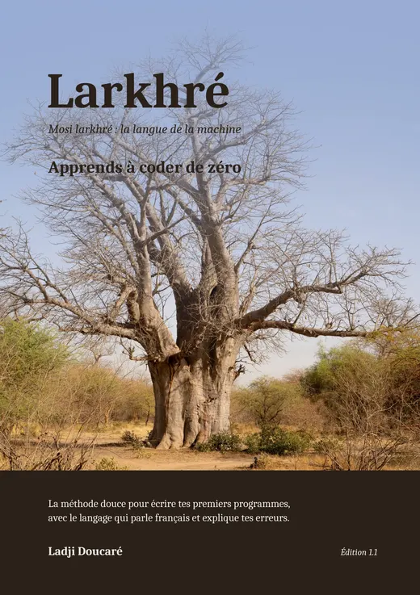

Découvre le langage en vidéo, avant de commencer le livre.

Le livre officiel du langage Larkhré
14 chapitres progressifs, des exercices corrigés et 3 vrais projets à créer toi-même : un jeu, un quiz qui garde ton record, et une carte de vœux dessinée par ton code. Rien à installer : tout se passe dans ton navigateur, même sur téléphone.
Pas encore convaincu ? Essaie le langage gratuitement, en dix secondes.
« La variable nmo n'existe pas. Tu voulais peut-être dire nom ? » En français, avec la piste pour corriger. Fini le mur de messages incompréhensibles.
Le mode ralenti éclaire la ligne en cours et montre tes variables changer en direct, tour après tour.
Un navigateur suffit : ordinateur, tablette ou téléphone. Tu écris ton premier programme trente secondes après avoir ouvert le livre.
Chaque chapitre se termine par des exercices, et trois projets complets te font assembler tout ce que tu as appris.
À la fin, une commande traduit ton code Larkhré en vrai Python. Tu y reconnaîtras les idées que tu maîtrises déjà.
Chaque exemple du livre est exécuté par le vrai moteur du langage au moment de fabriquer le livre : ce que tu lis « à l'écran » est exactement ce que tu verras.
garde record = 0 # une variable qui se souvient entre les parties laz score = 0 pou question dan questions { kan reponse == question["r"] { vox_couleur("Correct !", "vert") score += 1 } }
Extrait du projet du chapitre 10, le quiz à record. Tu écriras ce code toi-même, et tu le comprendras.
Ladji Doucaré a grandi au Sénégal. Il a créé Larkhré, un langage libre et gratuit, pour que l'on puisse apprendre à coder en français, sans le mur de l'anglais ni celui de l'installation. Le nom vient du soninké, sa langue : larkhré, c'est la bouche. Et « la langue de la machine » se dit mossi sef raanné : mossi, la machine ; sef, parler ; raanné, la langue parlée. Larkhré, c'est la bouche qui parle la langue de la machine. Ce livre est sa méthode, écrite avec l'outil qu'il a construit exactement pour ça.
Oui, c'est exactement pour toi. Le livre part de zéro, chaque notion est expliquée avec des mots simples et un exemple, et chaque chapitre a ses exercices corrigés.
Non. Le playground Larkhré fonctionne dans n'importe quel navigateur, même sur un téléphone. Si tu lis cette page, tu as tout ce qu'il faut.
Tu peux. Mais la première marche est plus haute : l'anglais, l'installation, les messages d'erreur difficiles. Larkhré enseigne les mêmes idées sans ces obstacles, et sa commande de traduction vers Python te sert ensuite de passerelle.
Le PDF se lit partout, s'imprime, et chaque nouvelle édition t'est envoyée gratuitement. Tu peux l'acheter sur Gumroad par carte bancaire, ou par Mobile Money sur Chariow. La version Kindle se lit sur liseuse ou dans l'appli Kindle. Le livre broché, en papier, reste ouvert à côté de ton écran pendant que tu codes.
En Afrique francophone, tu peux acheter le PDF par Mobile Money, avec les moyens proposés dans ton pays (par exemple Wave, Orange Money, MTN MoMo ou Moov), sur la boutique Chariow, pour 6 $. La carte bancaire y est aussi acceptée. Tu reçois le même livre, avec les mises à jour à vie.
Ce livre est écrit et édité par Ladji Doucaré, créateur du langage Larkhré (auto-édition). Il est distribué officiellement sur Amazon (Kindle et broché), Kobo et la Fnac, Gumroad et Chariow, et prochainement Google Play Livres. Toute autre version n'est pas autorisée.
Oui : le langage s'appelait auparavant LAZARUS. Le livre porte le nouveau nom depuis l'édition 1.1. L'édition actuelle, la 1.2, explique en plus le sens du nom en soninké. Tous ses programmes sont vérifiés automatiquement, et les acheteurs du PDF reçoivent chaque nouvelle édition gratuitement.
Commence aujourd'hui, dans ta langue.